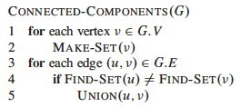

Outline
- Minimum Spanning Trees
- Generic Algorithm and Safe Edge Theorem
- Kruskal's Algorithm
- Prim's Algorithm
Minimum Spanning Trees
Spanning Trees
A spanning tree T for a connected graph G is a tree that includes all the vertices of G: it spans the graph.
Without calling them such, we have already encountered two kinds of spanning trees in the introduction to graphs (Topic 14): those generated by breadth-first search and depth-first search. We saw that _ breadth-first trees _ are one way of finding shortest paths in a graph, and _ depth-first forests _ (a collection of spanning trees, one for each connected component) are good for uncovering the structure of a graph such as topological sort and connectivity. These were defined on unweighted graphs.
Minimum Spanning Trees
Many application areas (e.g., in communications, electronics, and transportation) require finding the lowest cost way to connect a set of objects or locations. For example, the cost may be measured in terms of currency or distance. We can model such situations with weighted graphs, introduced in Topic 14 as graphs where a real-valued number is associated with each edge. Then we want to find a spanning tree of minimum cost.
More formally, we can pose this as a problem on a graph representation G = (V, E):
- The objects or locations are vertices V and the available connections are edges E.
- A weight function w(u,v) gives the weight on each edge (u,v) ∈ E.
- We seek T ⊆ E such that
- T connects all the vertices V of G.
- The sum of weights w(T) = Σ(u,v)∈T w(u,v) is minimized.
A few facts can be noted:
- G must be connected (consist of a single connected component) in order for T to be possible.
- However, if G is not connected we can generalize the problem to one of finding T1 ... Tc for each of c connected components of G.
- A subgraph of G that connects its vertices V at minimal cost will always be a tree. Why?
Therefore we call this the minimum spanning tree (MST) problem (and the generalized version the minimum spanning forest problem).
Here is an example of a minimum spanning tree (the shaded edges represent T):

Are minimum spanning trees unique?
Look at edges (e,f) and (c,e).
Generic Algorithm and Safe Edge Theorem
We specify a generic greedy algorithm for solving the MST problem. The algorithm will be "greedy" in terms of always choosing a lowest cost edge. This algorithm is instantiated into two versions, Kruskal's and Prim's algorithms, which differ in how they define from what set of edges the lowest cost edge is chosen.
Let's start by noting some properties that MSTs of G = (V, E) must have
- A MST for G has |V| − 1 edges. (See properties of trees, Topic 8.)
- Any tree (and hence any MST) has no cycles. It has only one path between any two vertices.
- There might be more than one MST for G.
Building a Solution
- We will build a set of edges A.
- Initially A has no edges.
- As we add edges to A, we maintain a loop invariant: A is a subset of some MST for G.
Define an edge (u,v) to be safe for A iff A ∪ {(u,v)} is also a subset of some MST for G.
(BTW, "iff" is not a spelling error: it is shorthand for "if and only if" commonly used in proofs.
If we only add safe edges to A, once |V| − 1 edges have been added we have a MST for G. This motivates the ...
Generic MST Algorithm

Loop Invariant: A is a subset of some MST for G
- Initialization: The initially empty set trivially satisfies the loop invariant.
- Maintenance: Since we add only safe edges, A remains a subset of some MST.
- Termination: We stop when A is a spanning tree (|A| = |V| − 1), and it is a subset of itself.
OK, great, but how do we find safe edges?
Finding Safe Edges
Each time we add an edge we are connecting two sets of vertices that were not previously connected by A. (Otherwise we would be forming a cycle.) A greedy algorithm might try to keep the cost down by choosing the lowest cost edge that connects previously unconnected vertices. (Perhaps we should call it a "stingy" algorithm!)
But is this greedy strategy "safe"? How do we know that after adding this edge we still have a subset of an MST?
First some definitions:
- A cut (S, V − S) is a partition of vertices into disjoint sets S and V − S.
- Edge (u,v) ∈ E crosses cut (S, V − S) if one endpoint is in S and the other is in V − S.
- A cut respects A iff no edge in A crosses the cut.
- An edge is a light edge crossing a cut iff its weight is minimum over all edges crossing the cut. (There may be more than one light edge for a given cut.)
The following illustrates a cut and will be used in the proof below. There are two sets of vertices S and V − S. Four edges cross the cut (S, V - S). Whether or not this respects A depends on what is in A.

Suppose A is the shaded edges. Does this cut respect A?
Safe Edge Theorem
Let G = (V, E) be a graph, A be a subset of some MST for G, (S, V − S) be a cut that respects A, and (u,v) be a light edge crossing (S, V − S). Then (u,v) is safe for A.
(A light edge that crosses a cut that respects _A is safe for A._)
Proof: Let T be a MST that includes A. Consider two cases:
Case 1: T contains (u,v). Then the theorem is proven, since A ∪ {(u,v)} ⊆ T is a subset of some MST for G.
Case 2: T does not contain (u,v). We will show that we can construct a tree T' that is a MST for G and that contains A ∪ {(u,v)}.
Since T is a tree it contains a unique path p between u and v. Path p must cross the cut (S, V − S) at least once (otherwise T would be disconnected). Let (x,y) be an edge of p that crosses the cut.
(Except for the dashed edge (u,v), all the edges shown in the figure are in T. A is not shown in the figure, but it cannot contain any edges that cross the cut, since the cut respects A. Shaded edges are the path p.)
Since the cut respects A, edge (x,y) is not in A.
To form T' from T: Remove (x,y). This breaks T into two components. Add (u,v). This reconnects the tree. So T' = T - {(x,y)} ∪ (u,v) is a spanning tree.
To show that T' is a minimal spanning tree: w(T') = w(T) - w(x,y) + w(u,v) ≤ w(T) since (u,v) is light.
We still need to show that (u,v) is safe for A. Since A ⊆ T and (x,y) ∉ A then A ⊆ T'. Therefore A ∪ {(u,v)} ⊆ T', a MST. ♦
Further Observations
A is a forest containing connected components. Initially each component is a single vertex. Any safe edge merges two of these components into one. Each component so constructed is a tree. Since an MST has exactly |V| − 1 edges, the loop iterates |V| − 1 times before we are down to one component.
Corollary
If C = (VC, EC) is a connected component in the forest GA = (V, A) and (u,v) is a light edge connecting C to some other component C' in GA -- that is, (u,v) is a light edge crossing the cut (VC, V - VC) -- then (u,v) is safe for A.
Proof: Set S = VC in the theorem. ♦
This idea (of thinking in terms of components rather than vertices) leads to Kruskal's algorithm ...
Kruskal's Algorithm
Kruskal's algorithm starts with each vertex being its own component, and repeatedly merges two components into one by choosing the light edge that connects them. It does this greedily (or stingily?) by scanning the edges in increasing order by weight. A disjoint-set data structure is used to determine whether an edge connects vertices in two different components.
This algorithm has similarities with the connected components algorithm we previously saw in Topic 16:

Here is Kruskal's version:

Example
Let's start with this example. The first edge has been chosen.
Add 4 more edges (notice we could add edges of weight 2 in either order, and similarly for 4) ...
The next edge considered is not added because it would connect already connected vertices:
Keep going until the MST is constructed, and click to see the final tree.
Analysis
The costs are:
- Initialize A: O(1)
- First
forloop: |V|MAKE-SEToperations - Sort E: O(E lg E)
- Second
forloop: O(E)FIND-SETsandUNIONs
If we use the tree implementation of the disjoint-set data structure with
union by rank and path compression (Topic
16),
the amortized cost per MAKE-SET, UNION and FIND-SET operation (across
|E| operations) is O(α(V)), where α is a very slowly growing function,
the inverse of Ackermann's function. (Lemma 21.11 states that MAKE-SET in
isolation is O(1), but here we must treat it as O(α(V)) since we are making
a statement about the amortized cost per operation in a sequence of m
operations: see section 24.1. Also, using O(α(V)) simplifies the expression
below.)
Droping the lower order O(1) and substituting α(V) for the disjoint-set operations, the above list of costs sums to O((V + E)⋅α(V))+ O(E lg E).
Since G is connected, |E| ≥ |V| − 1, so we can replace V with E to simplify the first term for the disjoint-set operations, O((V + E)⋅α(V)), to O((E + E)⋅α(V)) or O(E⋅α(V)).
Furthermore, α(V) = O(lg V) = O(lg E), so O(E⋅α(V)) is O(E lg E), and hence the entire expression we started with, O((V + E)⋅α(V))+ O(E lg E), simplifies to O(E lg E).
Finally, since |E| ≤ |V|2, lg |E| = O(2 lg V) = O(lg V), so we can write the result as O(E lg V) to obtain the growth rate in terms of both |E| and |V|.
(It is usually a good idea to include both V and E when giving growth rates for graph algorithms, unless one of them can be strictly limited to the other. Shortly we will see that O(E lg V) enables comparison to Prim's algorithm.)
Prim's Algorithm
This algorithm is also a greedy (stingy) algorithm, but it builds one tree, choosing the lightest edge incident on the growing tree, so the set A is always a tree. The tree is initialized to be a single vertex, designated r for root.
At each step it finds a light edge crossing the cut (VA, V - VA), where VA= vertices that are incident on A, and adds this edge to A. (Initially, A = {} and VA = {r}.)

(Edges of A are shaded in the illustration.)
General Idea
To find the light edge quickly we use a priority queue Q (Topic 09):
- Each queued object is a vertex in V − VA (the vertices that have not yet been connected to A).
- The key is the minimum weight of any edge (u,v) where u ∈ VA. (We update this weight for v whenever a new edge is found that reaches v at a lower cost than before.)
- Thus the vertex returned by
EXTRACT-MINis for v such that ∃ u ∈ VA and (u,v) is a light edge crossing (VA, V - VA). - If v is not adjacent to any vertices in VA, the key of v is ∞
The edges of A will form a rooted tree with root r, given as input (r can be any vertex).
- Each vertex keeps track of its parent by the attribute v.π = parent of v, or NIL if v = r or has no parent yet.
- As the algorithm progresses, A = {(v, v.π) : v ∈ V - {r} − Q}.
- At termination, Q is empty, so A is a MST.
Pseudocode
This code differs from the book's version in having explicit calls to the heap methods:
Notice that it is possible for the last if to execute multiple times for a
given v. In other words, we may find an edge reaching vertex v, but before
we choose to use it (because other edges have lower key values), we find
another edge reaching v for lower cost (key value). Watch for this
situation in the example below.
Example
Let's try it with this graph. The first three steps are shown. Every time a vertex is dequed, it is colored black and the cost of all adjacent vertices are updated as needed. For example, when a is dequeued, the cost of b is updated from infinite to 4, and the cost of h is updated from infinite to 8. Then when b is dequeued, its neighbors are updated and so on.
_Did you see where a vertex's key was lowered from one non-infinite value to another? Which one? _
Now finish it and click on the image to see final solution.
Analysis
Performance depends on the priority queue implementation. With a binary heap implementation (Topic 09), the costs are:
- Initialize Q and iterate over |V| vertices in first
forloop to insert in queue, each insert being O(lg V): O(V lg V) total. - Decrease key of r: O(lg V)
- The
whileloop has |V|EXTRACT-MINcalls -> O(V lg V) - By amortized analysis, the inner
for eachloop processes Θ(|E|) edges, O(E) of which result in O(lg V)DECREASE-KEYcalls -> O(E lg V)
The sum of the dominating terms is O(V lg V) + O(E lg V).
If G is connected, |E| ≥ |V| − 1, so we can replace O(V lg V) with O(E lg V), and the total is O(E lg V).
This is asympotitically the same as Kruskal's algorithm. A faster implementation of O(E + V lg V) is possible with Fibonacci Heaps, as explained in the text.
Dan Suthers Last modified: Thu Apr 3 12:36:42 HST 2014
Images are from the instructor's material for Cormen et al. Introduction to
Algorithms, Third Edition.